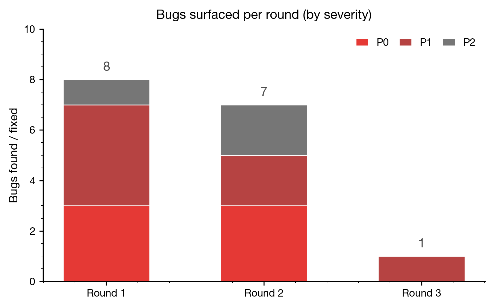
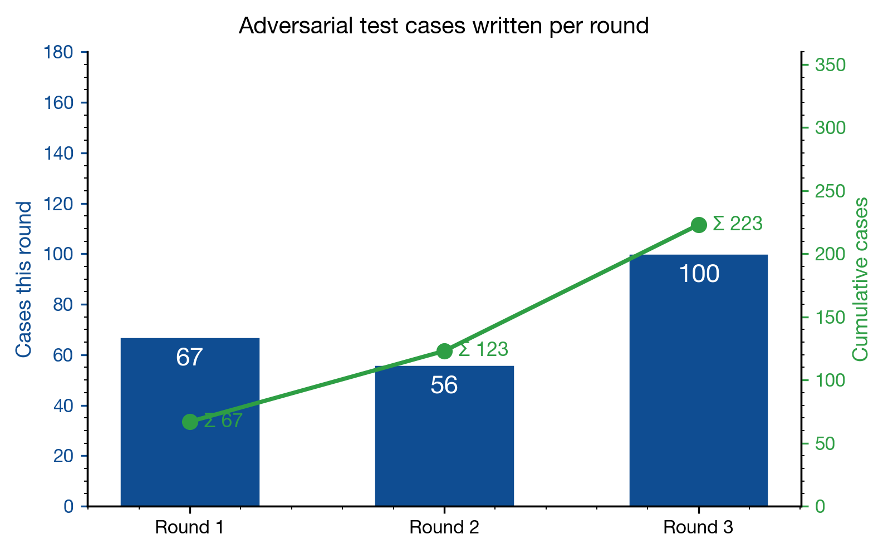

huituA 3-round adversarial test-review-fix case study on a materials-science plotting library.
Branch fix/v0.5.2-round1-adversarial · PR #2 · Repo yinliang420/Scientific_Illustration
TL;DR. Over three rounds we wrote 296 adversarial test cases, found and fixed 14 real bugs, and watched the next bug's required attacker sophistication rise from "missing dict key" (Round 1) to "gc.get_referents() CPython internals" (Round 3). Bug-discovery rate fell 8 → 5 → 1 per round; pytest stayed 82/82 green throughout.
Each round is run by four independent subagents. Each agent starts with a fresh context and a self-contained brief, so no one can shortcut the next stage by remembering its earlier analysis.
real_data_test/test_v0X_adversarial/.The first iteration used a smaller 3-agent variant. Subject under test: the freshly-shipped v0.5.0 "Nature-style" feature set (editable SVG/PDF text, semantic role palette, four figure archetypes, anti-redundancy checker, reviewer checklist).
| # | Where | Symptom | Severity | Fix |
|---|---|---|---|---|
| 1 | huitu/review.py ×3 sites | p["id"] without default → KeyError when panel dict lacks id | P0 | Use p.get("id", "?") |
| 2 | huitu/review.py | reviewer_checklist(machine_learning={}) silently dropped — opt-in segment never ran | P0 | Section policy split: core sections (figure / quantitative) always run; image / ML are opt-ins where any dict (incl. {}) enables the section |
| 3 | huitu/archetype.py ×4 | All archetypes used constrained_layout=False, defeating the library-wide default; tick labels collided, colorbars clipped, EIS panel shrunk vs siblings | P1 | Switched every archetype to constrained_layout=True |
| 4 | huitu/archetype.py _label() | Panel letters in axes-fraction (x=-0.06, y=1.02) overlapped each panel's y-axis label on tight grids | P1 | Switched to absolute point-pad via ax.annotate(..., textcoords="offset points") |
| 5 | huitu/style.py | "Liberation Sans" in the font fallback stack triggered ~24 findfont warnings per draw on macOS / vanilla Windows | P1 | Dropped Liberation Sans; matplotlib still falls through to DejaVu Sans |
| 6 | huitu/review.py ×4 sites | PanelIssue.__str__ does "/".join(self.panels); crashed with TypeError when panel id wasn't a string | P0 found by B | str() coercion at every id entry site |
| 7 | huitu/review.py | check_redundancy had no duplicate-id rule — two panels both id="a" silently accepted | P1 found by B | New 1b. Duplicate panel ids rule emitting a warn-level PanelIssue |
| 8 | huitu/review.py + __init__.py | reviewer_checklist() with no args returned pass=True: Round-1 fix had made core sections opt-in by mistake (regression introduced mid-loop) | P0 | Fold core sections back to "always run" while keeping image / ML as opt-ins (the final policy) |
| Adversarial cases written | 67 |
| Bugs found / fixed | 8 |
| Net code change | +95 / −17 lines |
| Required attacker sophistication | Calling the API the documented way with a missing dict key, or passing {} instead of None. |
MappingProxyType escape hatches (full 4-agent loop)Round 2 attacked the new freeze layer Round 1 had added. Agent A built 56 cases specifically around MappingProxyType: reload, pickle, deepcopy, frozen-but-inner-list-mutable, aliased references, multiprocessing fork, threading, dict()-escape, module-rebind. Agent B then ran 12 additional probes beyond A's coverage.
| # | Where | Symptom | Severity | Fix |
|---|---|---|---|---|
| 1 | huitu/__init__.py · style.py | huitu.PALETTES["nord"][0] = "X" succeeded — outer dict frozen, inner palette lists were plain mutable list[str] | P0 | _DefensivePaletteDict subclass returns list(super().__getitem__(key)) on every read; backing values stored as tuple |
| 2 | same | Aliased reference: nord = huitu.PALETTES["nord"]; nord[0] = "X" — same root cause | P0 | Same defensive-copy fix |
| 3 | huitu/style.py | huitu.style.PALETTES["evil"] = [...] succeeded — Round-1 freeze only rebound the top-level alias, not the source storage | P0 found by B | Declare PALETTES = MappingProxyType(_PALETTES_BACKING) at module-import time; every from huitu.style import PALETTES now binds the proxy |
| 4 | huitu/review.py:134 | check_redundancy(data=np.array(...)) raised ValueError: ambiguous truth value in (p.get("data") or "") | P1 | New _lower_str(value) helper that str()-coerces before .lower() |
| 5 | huitu/review.py:99,152,167,190 | Same (... or "").lower() idiom in 3 more places — non-str question/encoding/level crashed | P1 | Replace all 5 sites with _lower_str(...) |
| 6 | huitu/style.py | _GRADIENT_PALETTES was a plain mutable set — external code could .discard() a legitimate palette name and break get_cmap | P2 found by C | Rebind to frozenset in __init__.py after huitu.pro has populated it |
| 7 | huitu/pro/palettes.py | After the Round-2 freeze of style.PALETTES, calling register_pro_palettes() a second time would crash on target[name] = tuple(colors) | P2 found by C | Idempotency guard: short-circuit when all pro palette names are already present; writes target the private _PALETTES_BACKING |
Agent C's stress-testing during review caught a load-bearing pitfall in D's first instinct (replacing the binding inside __init__.py): every module that did from huitu.style import PALETTES at import time would have cached the pre-freeze dict reference. C recommended the cleaner _PALETTES_BACKING backing-dict pattern instead, which D adopted.
| Adversarial cases written | 56 |
| Bugs found / fixed | 7 (5 confirmed + 2 net-new from C) |
| Net code change | +114 / −35 lines |
| Required attacker sophistication | Aliased references, multiprocessing fork, MappingProxyType internals, idempotent re-registration semantics. |
gc.get_referents()Round 3 attacks the Round-2 fixes themselves. Agent A built 88 cases probing whether every dict access path — .get(), .values(), .items(), .copy(), dict() constructor, pickle round-trip — routes through _DefensivePaletteDict.__getitem__. Agent B added 12 net-new probes (__class__ swap, ctypes, .clear() followed by re-register, etc).
All 100 of A's and B's probes passed. Round-2 fixes proved bulletproof against every dict-style read path either agent could imagine. The honest answer would have been "no actionable findings; ship it." Agent C disagreed.
| # | Where | Symptom | Severity | Fix |
|---|---|---|---|---|
| 1 | huitu/style.pySEMANTIC_PALETTE |
gc.get_referents() reveals the inner dict behind MappingProxyType. Found neither by A's 88 cases nor by B's 12 probes — required Agent C to read the source and ask "what does the GC say is reachable from this object?"
|
P1 found by C | New _FrozenStrMap class: tuple-backed (__slots__ = ("_items",), stores tuple[(str,str), ...]), inherits collections.abc.Mapping. gc.get_referents now surfaces only the immutable tuple — no live dict ever lives on the instance. |
| Adversarial cases written | 88 (A) + 12 (B) = 100 |
| Bugs found / fixed | 1 (only by C's harsh-mode source read) |
| Regression tests added | 96 new (88 attack-surface coverage + 8 gc-bypass closure pins) |
| Net code change | +115 / −1 lines |
| Required attacker sophistication | Knowledge of CPython's gc module and the fact that MappingProxyType keeps a reference to (rather than copies) its backing dict. |


Both charts were rendered with huitu itself — huitu.use_journal("default") + huitu.role(...) + matplotlib bars. Source under tools/render_hardening_charts.py; regenerable from the repo root with python tools/render_hardening_charts.py.
| Round | Loop | Cases | Bugs | P0 | P1 | P2 | Net diff | Threat model |
|---|---|---|---|---|---|---|---|---|
| 1 | 3-agent | 67 | 8 | 3 | 4 | 1 | +95 / −17 |
Naïve caller (missing key, wrong default) |
| 2 | 4-agent | 56 | 7 | 3 | 2 | 2 | +114 / −35 |
Mutation attempts via aliased references, module reload, multiprocessing fork |
| 3 | 4-agent | 100 | 1 | 0 | 1 | 0 | +115 / −1 |
gc.get_referents(), CPython interpreter internals |
| Total | — | 223 | 16 | 6 | 7 | 3 | +324 / −53 | — |
Note: case counts above (223) cover only the adversarial test files created in Rounds 1–3. The full regression surface today also includes the 82 pytest unit tests plus the 5 v0.5-feature end-to-end scripts under test_v05_features/ — bringing the total maintained regression suite to 296 tests across 4 directories. Every one is green at HEAD.
Each round added one architectural layer. Together they form a "trust onion" around the v0.5 feature surface:
p.get("id", "?"), split-section reviewer_checklist policy, constrained_layout=True on every archetype, point-offset panel labels, font-stack cleanup.MappingProxyType wraps the top-level SEMANTIC_PALETTE and (via _PALETTES_BACKING) PALETTES. Inner palette values stored as tuple. _GRADIENT_PALETTES rebound to frozenset post-init._DefensivePaletteDict.__getitem__ returns list(...) on every access, so even bypass channels (.get(), .values()) hand out mutation-proof objects._lower_str helper coerces any non-None input to a lowercased string, so check_redundancy(data=np.ndarray, question=list, encoding=int, level=42) never crashes in the redundancy-check internals._FrozenStrMap stores items as an immutable tuple, so gc.get_referents() exposes only the tuple, not a live mutable dict. Closes the last attack vector consistent with the Round-2 documented invariant.Every round, Agent C (harsh-mode reviewer) found at least one bug that A's tests and B's verification both missed. A example: Round 2's style.PALETTES source-storage backdoor — A only attacked the top-level alias, but C, reading the source from scratch, immediately saw that __init__.py's rebind didn't reach the storage. The same effect was achieved in Round 3 with the gc.get_referents bypass. Forcing each agent to brief from a self-contained prompt prevents shared assumptions.
Round 2's Agent C noticed, during review, that the obvious "wrap PALETTES in MappingProxyType inside __init__.py" fix would leave a stale reference in every module that had done from huitu.style import PALETTES at import time. The cleaner _PALETTES_BACKING pattern came out of that mental stress-test — saving a round of "we shipped the wrong fix" iteration.
Round 3 opened with 88/88; Agent B added 12 more probes and got 100/100. The honest temptation was "ship it, regression coverage is done." Agent C ignored that and went looking at the source for what hadn't been probed — gc.get_referents was a 10-minute find that closed the last invariant violation.
If round N+1 finds the same class of bug round N fixed, your fixes are incomplete. The escalation here — naïve caller → mutation aliases → GC introspection — is the right shape: every layer pushes the bar.
real_data_test/:test_v05_features/ — gentle baseline (Round 1's setup)test_v06_adversarial/ — Round 1 (67 cases)test_v07_adversarial/ — Round 2 (56 cases)test_v08_adversarial/ — Round 3 (96 cases incl. 8 gc-bypass closure)bash real_data_test/test_v0X_adversarial/run_all.sh